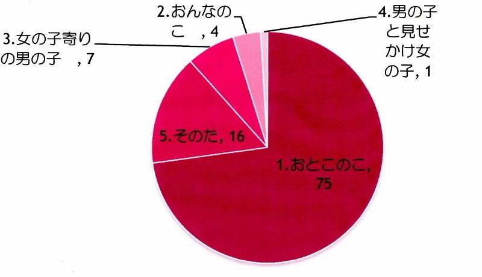

| 2012/07 03 Tue | ひめたん大図鑑２１だよ（2012 年２月） |
462
 なんかあの企画は画期的だね
なんかあの企画は画期的だね
なんかあの企画は画期的だね
監督さんのイメージから出来た映像なのかな？？？
それともメンバーが提案したのかな？？？
ある程度ふわっとした企画書が来て、
個々のキャラクターとかオリジナリティーとかセンスなんか交えながら、
監督さんとメンバーが意見を出し合いながら作りました。
原本と全く違う内容になったって子もちらほら...。
463
放送部に帰っちゃダメ〜!!乃木坂放送部作ればいいんじゃない？
放送部に帰っちゃダメ〜!!乃木坂放送部作ればいいんじゃない？
乃木坂放送部(・∀・)!
面白そうぢゃねー♪
是非
あみあみ
（能條愛未chan）には入ってもらいたいねー。
勧誘してみよっかね。うん。
464
えーと、過去のブログにコメントしてもいい？
えーと、過去のブログにコメントしてもいい？
それとも最新のブログに過去の記事のコメントしたほうがいい？
どっちでも嬉しい(*^^*)
のでおまかせしますありがとーうございますです♪
465
44℃のお湯に30分も浸かってのぼせなかったの？
44℃のお湯に30分も浸かってのぼせなかったの？
毎回半のぼせ状態ー。
なのでさすがに、あいだにクールダウンを入れました＼(^^)／
あと換気扇も回したらだいぶ楽♪
成長しましたしょー？
466
ひめたんは『さばドル』は観てる？
ひめたんは『さばドル』は観てる？
日によるー('・ω・`)
お仕事がある日は基本早く寝ちゃって、ああー見逃したってなる...。
何にもない日はばっちり観てます!!!
467
ひめたんは、学校とお仕事どっちが楽しいんですか？
ひめたんは、学校とお仕事どっちが楽しいんですか？
違う楽しさがありますよね事実(ｗ)♪
学校仲間とお仕事仲間ってなんか違うけど
どっちの存在も大事だし、みんなといると落ち着くし。
468
海外旅行に行くなら何処に行きたいかな？？
海外旅行に行くなら何処に行きたいかな？？
こりあ(・∀・)/
469
握手会でもちょっとだけPerfumeの話してもいいかな？
握手会でもちょっとだけPerfumeの話してもいいかな？
ちょっとと言わずたっぷりPerfumeさんトークしましょうー♪
あー楽しみ楽しみ∩^ω^∩
470
あんね違うんよ聞いて
あんね違うんよ聞いて
44℃のお湯は体にもお肌にも良くないよ
41℃くらいのお湯に肩までゆっくり浸かるといいよ
そうなんですかー!？
やっぱり41℃にしよっかなどうしよっかなー。
よし。今から41℃のお湯に肩まで浸かってくる(`・・)ゝ
471
柿ピーは好きですか？
柿ピーは好きですか？
好き。
まさに甘辛ミックス!
最近、チョコ柿ピーってあるじゃないですか？
あれは、なお好き(*^^*)
472
あのーmosってそういう意味でしたっけ？
あのーmosってそういう意味でしたっけ？
ちがうような...
うわー調べたら、昨日の説明肝心なとこ足りてなかった!
Ｍ
...Mountain(山のように気高く堂々と)
Ｏ
...Ocean(海のように深く広い心で)
Ｓ
...Sunのように(太陽のように燃え尽きることのない情熱を持って)
出典:Wikipedia
いやーしかしモスバーガー様かっこよすぎでしょ!
こりゃ明日のお昼はモスバーガー行くしかー♪
473
あげたピンクの熊ちゃん今どうなってるのかな(^O^)？
あげたピンクの熊ちゃん今どうなってるのかな(^O^)？
相変わらず元気で、いつもひめたんにぱわーをくれるよ(*^_ ')
この子かわいいんだからもーう。
...と言いつつ、身につけてたらさすがに黒くなってきた。
洗濯機入れちゃおうかな。ぐるぐるくまさん。ぐるクマ!
474
ひめたんのパッツンがかわいすぎて爆発しそうです
ひめたんのパッツンがかわいすぎて爆発しそうです
爆発してもいいですか？
爆発するほどの写真ではないとひめたんは思いますけれどもー...。
爆発しちゃって下さい(^O^)/ひめたんが撃ってあげましょか？
ばきゅん
475
柿ピーと言えば、柿の種とピーナツの比率は6:4らしいですよ
柿ピーと言えば、柿の種とピーナツの比率は6:4らしいですよ
知ってたかな〜。多分合ってると思います↑(笑
は、初めて聞いた!
あー柿の種辛いって思ったとき、いい感じにピーナッツありますよね。
深いなー。
476
ひめたん「ヒートショック」には気を付けましょう←知っとる？
ひめたん「ヒートショック」には気を付けましょう←知っとる？
ヒートショック...。
んー初めて聞いた(ω)
こりゃ調べてみるしか!
Q3,あなたの性別はー？
おとこのこ多いねー＼(^O^)／
おんなのこも嬉しいよ！
女の子よりの男の子なんて...可愛いのねひめきゅんさんたら///きゃ

(*´・ω・*)ひめたん
コメント(49)
2012/07/03 22:12